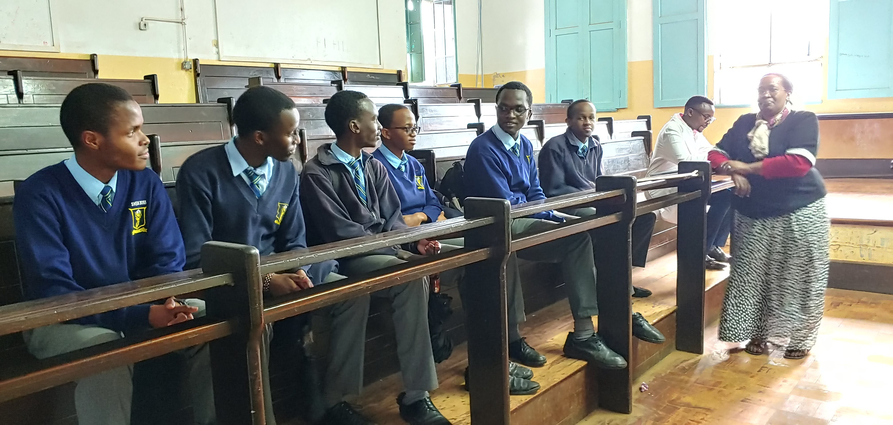

At the age of 2 in 2008, I started kindargarten at Juja St.Peter's School. After 3 years I completed my kindargarten and graduated to primary school in second place out of a class of about 30.

I battled my way through primary school for eight years which culminated in achieving 403/500 marks in my KCPE.

In the first government selection, I was admitted at Baricho Boys Highschool in Kirinyaga however, Nairobi School ahd always been my dream school and by God's grace I managed to secure my admissin to my dream school. After four years of working smart, I completed my 4 year highschool course in 2022 with an aggregate of an A- of 79 points out of a possible 84 points.
In Februrary 2023, I enrolled a two months Boot Camp in: coding, programming, web development and robotics at JKUAT where I am to date as I await KUCCPS to open their university placement portal.